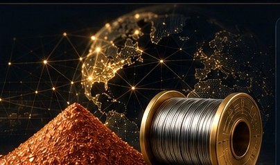
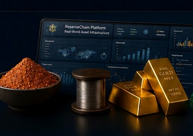
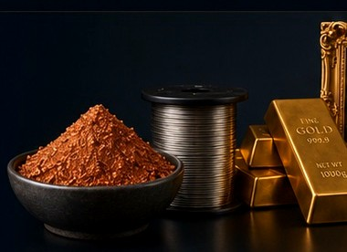
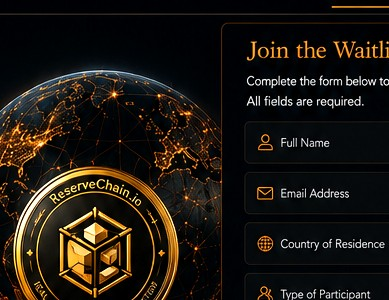

Document
Organise source records, technical specifications and supporting evidence for each asset lot or batch.
PROPOSED WORKFLOWAn evidence-first platform concept for high-purity Copper Powder and Nickel Wire — designed around traceability, controlled records and future-ready asset infrastructure.
ReserveChain is currently in development. No tokens are being offered or sold through this website. Registration of interest does not constitute an investment, token purchase, asset reservation, price reservation, token allocation or entitlement to participate in any future offering. Any future availability will be subject to the final Swiss corporate and legal structure, definitive offering documentation, asset verification, custody arrangements, jurisdictional eligibility, KYC/KYB, sanctions screening and final approval.
ReserveChain is being designed to bring physical-asset records and future digital infrastructure into one governed system. Each capability remains subject to legal, technical and operational approval.
Organise source records, technical specifications and supporting evidence for each asset lot or batch.
PROPOSED WORKFLOWRoute submitted evidence through defined review and approval stages before any public publication.
PROPOSED WORKFLOWCreate a structured Digital Asset Passport with clear document references and transparent status labels.
IN DEVELOPMENTDesign future tokenization, reconciliation and redemption modules without activating them prematurely.
INACTIVE / PLANNEDInitial proposed programs are centred on two industrial materials. Specifications below are transcribed from supplied sample analysis documents and remain subject to independent verification and approval.
99.9999% reported in supplied sample analysis
A proposed industrial-metal program with document-led records for material specification, laboratory evidence, lot identification and future review workflows.
99.9807% reported in supplied sample analysis
A proposed program for wire-material records, sample analysis, batch or coil references and future controlled publication.
Preliminary illustrative information only — subject to documentary verification, independent assessment and final approval. Supplied certificates are source documents only and do not establish current inventory, legal ownership, custody, insurance, valuation or reserves.
The proposed Digital Asset Passport is intended to bring asset identity, source documents, review history and future status information together in a structured record.
Illustrative interface only. This sample is not a verified asset record and contains no live reserve or ownership claim.
Industrial material imagery and visual references supplied with the project inform this concept direction. All visuals are illustrative and do not represent verified inventory or current reserves.

Material-led visual language

Designed for clarity


Register your interest in project updates and future platform developments. Registration is not an offer, investment, purchase or reservation.
ReserveChain’s proposed model is built around clear separation between source documents, review decisions, publication status and future platform functionality.
Only approved information should become a public asset statement.
Planned functions remain labelled as planned; inactive features stay unavailable.
Future implementation should include documentation, controlled access, auditability and client-owned accounts.